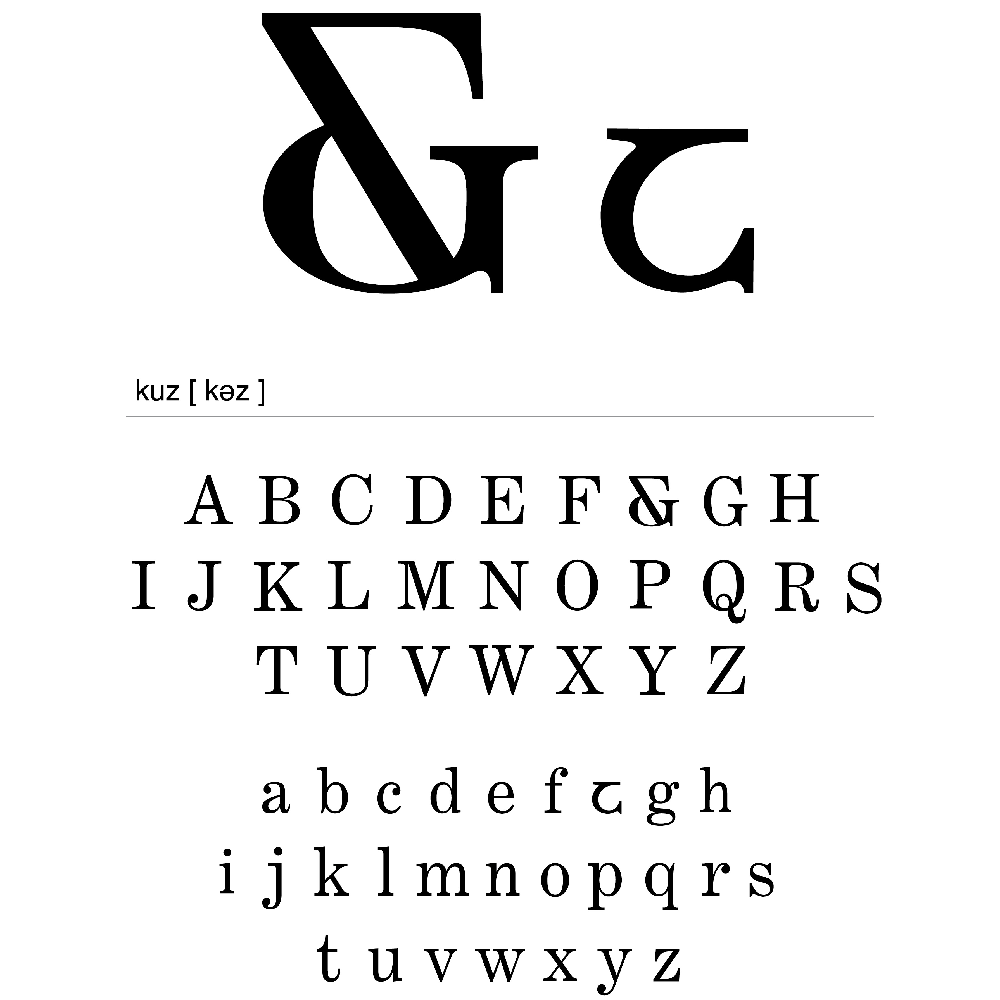
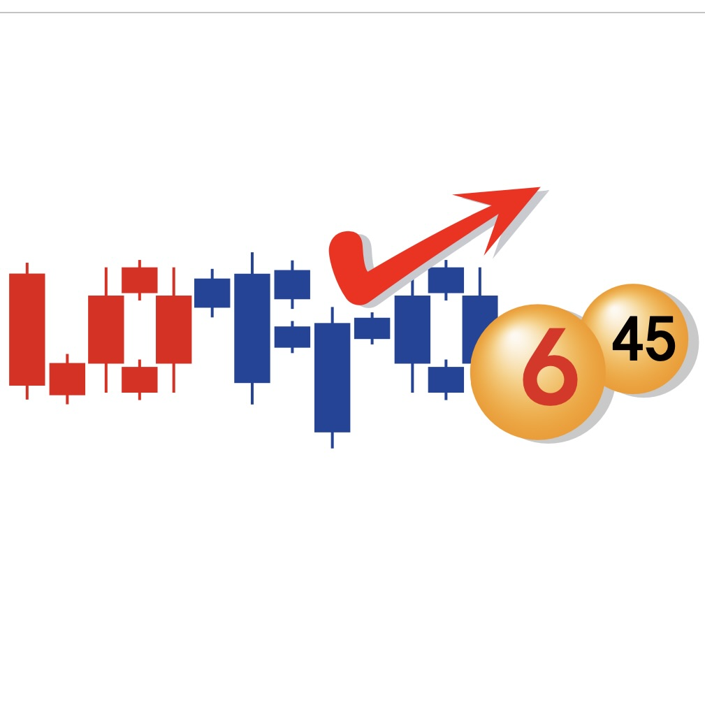

back
타이포그래피기초
다양한 형태의 콘텐츠들을 가독성을 고려하여 정보를 효과적으로 제공하는 디자인 과목이다.
인쇄 매체뿐만 아니라 디지털미디어 매체를 포함하여 시각디자인 영역의 중요한 핵심 분야이다. 시각디자인에 활용되는 타이포그래피 컨셉과 레이아웃을 훈련하며,
타이포그래피에 관한 합리적 사고방법과 표현 역량 강화를 목표로 한다.

27번째 알파벳

시각변주
타이포공명